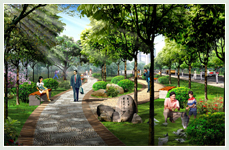

水本不是蓝色，是蔚蓝天空映蓝的这护城河水；水也本 不是绿色，是夹岸的垂柳染绿了这古老的城池。水本无涟漪，是风，是鱼，是朝气蓬勃的赛艇健儿拨弄着静静的水面，也拨弄着每个来到这里的人的心。
水本不是蓝色，是蔚蓝天空映蓝的这护城河水；水也本 不是绿色，是夹岸的垂柳染绿了这古老的城池。水本无涟漪，是风，是鱼，是朝气蓬勃的赛艇健儿拨弄着静静的水面，也拨弄着每个来到这里的人的心。
我从秋季来到阳春门，一夜大雨过后，笔直而幽静的人行道上铺满了金黄色的落叶，仿佛童话但又触手可及。我在冬季守侯阳春门，没有大雪为伴，让我不能见到她银装素裹的模样。然而，我却在一个十分晴朗的午后透过树影见到了那蔚蓝、那波光粼粼、那给人海的错觉的护城河。我醉了，竟把冬日当夏日，兴奋的拨通电话，与远方的朋友回忆着那快乐的夏日海滩。我在春季走进阳春门，绿树相依、古城为伴、微风送暖、城池献瑞……
一切是那么的生机盎然，让人不自主的去热爱生活、热爱这个美丽的地方。每次靠近她，总能发现有新的花朵绽放，黄色迎春、红色春梅、白色玉兰还有人面桃花……夏天应该是阳春门最热闹的时候，初夏时节每天都有幸福的新人们来这里拍婚裟，每个新娘都是那么笑容的迷人，而每个新郎的眼神又都是那么的深邃和明亮。而他们的笑丝毫没有打扰树下偎依的恋人，他们相拥、相视、相吻眼中 只有对方，心中只有彼此。散步和遛鸟的老人们看到他们笑了，而孩子们是最高兴的。他们和家人一 起荡舟、在小商店里搜索着自己喜欢的美食和冷饮，跟小狗在草地上追逐，直到夕阳落到了仲宣楼上，直到晚霞映红了天空和云朵，人们才渐渐散去。而这时，闪亮的彩灯又把阳春门推向了另一个新的高潮，饭后凉爽的晚风中，一对对中年夫妇在音乐声中翩翩起舞，旋律带走了他们一身的疲惫，带来了无尽的欢乐……


河畔林语，树的家，鸟的家，您的家。
一棵树就是一把伞。它能蔽荫和截留雨水。
一棵树吸收的有毒气体有时达10多种。如松柏树、樟树、夹竹桃等都是 “杂毒”的能手。
一棵树就是一台消音器。植物本身是一种多孔材料，具有一定的消音作用，投射到树木叶层的噪 声，一部分被树叶向各个方向不规则反射而减弱，一部分因声波造成树叶微振而使声音消耗（即被吸 收），因而使环境变得安静。常绿阔叶树具有良好的减噪效果，浓密的人工林带可降低噪声10～20分 贝。 在河畔林语，除了保留迎客松、广玉兰、水杉等一百多棵原生树木外，还将设置三道天然屏障 形成三重隔离，让您在森林般的环境中远离都市的喧嚣，充分享受家的静谧和安逸。高度重视树对环 境改善的作用，这在襄樊小区建设中还是首次。

总用地：33794.60m2 容积率：1.8m3 建筑密度：30%
总面积：60830.28m2 总户数：633m3 绿 地 率：38%
车 位：180个空位 间 距 ：21米
